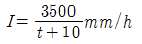
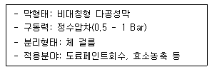

수질환경기사 (2005-03-06 기출문제)
1과목: 수질오염개론
1. 생물화학적 산화와 단백질 등의 생합성반응에서는 효소가 반응속도를 지배하는 것으로 알려져 있다. 단순한 효소 반응인 경우의 반응속도 양상에 대한 설명중 틀린 것은?
- 비교적 낮은 농도에서는 기질농도에 대한 반응속도는 1차식이다.
- 기질농도가 계속 증가함에 따라 기질에 대한 반응 차수는 1차에서 2차반응으로 전환된다.
- 반응속도는 존재하는 효소의 총량에 비례한다.
- 효소반응에 대한 반응속도론은 Henri에서 시작하여 Michaelis-Menten이나 Briggs-Haldane이 이를 보완 하였다.
(정답률: 알수없음)

2. 내부기관이 발달되어 있지 않고 Bacteria에 가까우며 광합성을 하는 미생물로 엽록소가 엽록체 내부에 있지 않고 세포전체에 퍼져있는 것은? (단, 섬유상이나 군락상의 단세포로 편모없음)
- 규조류
- 남조류
- 녹조류
- 진균류
(정답률: 알수없음)
3. 호수의 성층 중에서 부영양화(Eutrophication)가 주로 발생하는 곳은 ?
- epilimnion
- thermocline
- hypolimnion
- mesolimnion
(정답률: 알수없음)
4. 다음 중 방선균에 대한 설명으로 가장 적절한 것은?
- 절대적 광합성 독립영양균으로서 탄소원으로 CO2를 사용하고 H2O를 전자공여체로 사용한다.
- 세포벽은 글리코스 아미노 펩타이드로 되어 있으며, 두께는 200∼300Å이다.
- 곰팡이처럼 직경이 0.7㎛ 정도 되는 균사를 형성하며 균사는 모여서 균사체를 만든다.
- DNA나 RNA 중 하나만 가지고 있다.
(정답률: 알수없음)
5. Glycine(C2H5O2N)이 호기성 조건하에서 CO2, H2O, NH3로 변하고, 다시 NH3가 HNO3로 변화된다. 15g의 Glycine이 CO2, H2O, HNO3로 변화될 때 이론적으로 소요되는 산소총량(g)은?
- 약 9.2
- 약 11.5
- 약 14.9
- 약 22.4
(정답률: 46%)
6. 다음 하구에서의 유체의 이동에 관한 설명 중 잘못된것은 ?
- 조류의 영향을 받는 하천유역에서는 중력뿐아니라 조류(潮流)의 증감, 밀도류, 바람의 영향을 받는다.
- 간조시에는 담수의 흐름과 간조의 흐름이 반대로 작용하여 정체대를 형성한다.
- 하구에서의 약혼합시에는 염수와 담수의 2층의 밀도류가 발생한다.
- 하구는 조류의 영향을 받아 담수가 해수에 의해 뚜렷하게 희석되는 반폐쇄적인 연안수역이다.
(정답률: 55%)
7. 수자원에 대한 특성 설명중 옳은 것은?
- 지하수에서는 미생물에 의한 유기물의 분해가 주된 생물작용이다.
- 해수는 염분, 온도, pH 등 물리화학적 성상이 불안정적이다.
- 우리나라의 하천수에는 humic 물질들의 함유량이 적어 기존의 정수공정에서 사용되는 염소와 반응하여 THM과 같은 발암성 물질을 생성시키기 어렵다.
- 우수의 주성분은 해수보다는 육수(陸水)의 주성분과 거의 동일하다고 할 수 있다.
(정답률: 알수없음)
8. 염소가스를 물에 녹여 pH가 7이고 염소이온의 농도가 71ppm이면 자유염소와 차아염소산간의 비([HOCl]/[Cl2])는? (단, 차아염소산은 해리되지 않는 것으로 가정하며, 이때의 전리상수 값은 4.5×10-4mol/ℓ(25℃))
- 3.57×107
- 3.57×106
- 2.57×107
- 2.25×106
(정답률: 34%)
9. 하천에서 유기물 분해상태를 조사하기 위해 20℃에서 BOD를 측정했을 때 K=0.1/day 이었다. 실제 하천온도가 16℃일 때 탈산소계수는 ? (단, θ=1.047 이다.)
- 0.083/day
- 0.093/day
- 0.13/day
- 0.23/day
(정답률: 30%)
10. 0.1N HCl 용액 100mL에 0.2N NaOH 용액 75mL를 섞었다. 이 혼합용액의 pH는? (단, 전리도는 100% 기준)
- 약 10.1
- 약 10.4
- 약 11.3
- 약 12.5
(정답률: 알수없음)
11. 1차반응에 있어 반응 초기의 농도가 100 mg/L이고, 4시간 후에 10 mg/L로 감소되었다. 반응 2시간 후의 농도(mg/L)로 알맞는 것은?
- 21.6
- 31.6
- 41.6
- 51.6
(정답률: 알수없음)
12. 글루코스(C6H12O6) 45g을 35℃ 소화조에서 완전분해시킬 때 얼마의 메탄가스가 발생가능한가? (단, 메탄가스는 35℃로 발생된다고 가정함)
- 약 19L
- 약 23L
- 약 38L
- 약 46L
(정답률: 알수없음)
13. 어느 하천수의 단위시간당 산소전달율 KLa를 측정하고자 용존산소농도를 측정하였더니 10mg/ℓ이었다. 이때 용존산소 농도를 O mg/ℓ으로 만들기 위하여 필요한 Na2SO3의 이론첨가량은? (단, 원자량은 Na:23, S:32이다.)
- 38.8mg/ℓ
- 58.8mg/ℓ
- 78.8mg/ℓ
- 98.8mg/ℓ
(정답률: 알수없음)
14. 다음중 유사경도(pseudo-hardness)와 관련된 물질은?
- Cl-
- H+
- Na+
- NO3-
(정답률: 알수없음)
15. 아세트산(CH3COOH) 3,000mg/L 용액의 pH가 3.0 이었다면 이 용액의 해리정수(Ka)는?
- 2×10-5
- 4×10-5
- 6×10-5
- 8×10-5
(정답률: 알수없음)
16. 약품응집침전법의 설명중 옳지 않은 것은?
- Zeta전위가 클수록 입자간의 응집력이 커진다.
- 황산알루미늄은 철염에 비해 플록이 가볍고 적정 pH의 폭이 좁다.
- 알카리도가 낮으면 응집이 잘 일어나지 않는다.
- 3가의 응집제는 2가의 응집제보다 효과가 크다.
(정답률: 알수없음)
17. Fungi(균류, 곰팡이류)에 관한 설명으로 틀린 것은 ?
- 원시적 탄소동화작용을 통하여 유기물질을 섭취하는 독립영양계 생물이다.
- 폐수내의 질소와 용존산소가 부족한 경우에도 잘 성장하며 pH가 낮은 경우에서도 잘 성장한다.
- 구성물질의 75-80%가 물로서 C10H17O6N을 화학구조식으로 사용한다.
- 폭이 약 5-10㎛로서 현미경으로 쉽게 식별되며 슬러지팽화의 원인이 된다.
(정답률: 알수없음)
18. 유체의 층류운동에서 가장 중요한 수리학적 성질은?
- 유체의 비점과 빙점
- 유체의 체적팽창율과 기화열
- 유체의 표면장력과 비전도도
- 유체의 밀도와 점성
(정답률: 알수없음)
19. 다음 중 무더운 늦여름에 급증식하는 조류로서 수화현상(water blooms)과 가장 관련이 있는 것은?
- 청-녹조류
- 갈조류
- 규조류
- 적조류
(정답률: 알수없음)
20. Ca(OH)2 용액 50㎖를 중화시키는데 0.02N HCl 용액이 32.5㎖ 소요되었다. Ca(OH)2 용액의 경도(CaCO3 기준)는몇 mg/ℓ인가?
- 350
- 450
- 550
- 650
(정답률: 19%)
2과목: 상하수도계획
21. 상수처리를 위한 정수시설중 착수정에 관한 내용으로 알맞지 않는 것은?
- 수위가 고수위 이상으로 올라가지 않도록 월류관이나 월류위어를 설치한다.
- 착수정의 고수위와 주변벽체의 상단간에는 60cm이상의 여유를 두어야 한다.
- 착수정의 용량은 체류시간을 1.5분 이상으로 한다.
- 필요에 따라 응집제를 주입할 수 있는 장치를 설치하는 것이 바람직하다.
(정답률: 알수없음)
22. 상수시설인 취수시설중 침사지에 관한 설명으로 알맞지 않는 것은 ?
- 장방형으로 하며 유입부 및 유출부를 각각 점차 확대, 축소시킨 형태로 한다.
- 지의 길이는 폭의 3 - 8배를 표준으로 한다.
- 표면부하율은 500 - 800mm/min을 표준으로 한다.
- 지내평균유속은 2 - 7cm/sec를 표준으로 한다.
(정답률: 알수없음)
23. 수도관으로 사용되는 관종 중 스테인리스강관에 관한 특징으로 알맞지 않는 것은 ?
- 라이닝(lining)의 종류가 풍부하다.
- 용접접속에 시간이 걸린다.
- 강도가 크고 내구성이 있다.
- 이종금속과의 절연처리를 필요로 한다.
(정답률: 알수없음)
24. 상수처리를 위한 정수시설중 완속여과지의 수심표준으로 가장 적절한 것은?
- 여과지의 모래면 위의 수심은 30 - 60 cm를 표준으로 한다.
- 여과지의 모래면 위의 수심은 60 - 90 cm를 표준으로 한다.
- 여과지의 모래면 위의 수심은 90 - 120 cm를 표준으로 한다.
- 여과지의 모래면 위의 수심은 120 - 150 cm를 표준으로 한다.
(정답률: 25%)
25. 계획오수량에 관한 설명으로 알맞지 않는 것은 ?
- 합류식에서 우천시 계획오수량은 원칙적으로 계획 시간 최대오수량의 2배이상으로 한다.
- 계획시간최대오수량은 계획1일최대오수량의 1시간당 수량의 1.3-1.8배를 표준으로 한다.
- 계획1일평균오수량은 계획1일최대오수량의 70-80%를 표준으로 한다.
- 지하수량은 1인1일최대오수량의 10-20%로 한다.
(정답률: 알수없음)
26. 펌프의 토출량이 0.20m3/sec, 흡입구 유속 1.5m/sec 인 경우, 펌프의 흡입구경은?
- 약 198mm
- 약 232mm
- 약 323mm
- 약 413mm
(정답률: 36%)
27. 상수도 송수시설의 계획송수량 산정에 기준이 되는 수량은?
- 계획 1일 최대급수량
- 계획 1일 평균급수량
- 계획 1일 시간 최대 급수량
- 계획 1일 시간 평균 급수량
(정답률: 알수없음)
28. 계획우수량을 정하기 위하여 고려하여야 하는 사항중 확률년수는 원칙적으로 몇년으로 하는가 ?
- 3 - 5 년
- 5 - 10 년
- 10 - 20 년
- 20 - 30 년
(정답률: 알수없음)
29. 정수시설 중 플록형성지에 관한 설명으로 알맞지 않은 것은 ?
- 기계식교반에서 플로큐레이터(flocculator)의 주변속도는 15 - 80cm/sec를 표준으로 한다.
- 플록형성시간은 계획정수량에 대하여 5-10분간을 표준으로 한다.
- 직사각형이 표준이다.
- 혼화지와 침전지 사이에 위치하고 침전지에 붙여서 설치한다.
(정답률: 알수없음)
30. 강우강도

유역면적 2㎢, 유입시간 5분, 유출계수 0.7, 하수관내 유속 1m/sec 일 경우, 관길이 600m인 하수관에서 흘러나오는 우수량은? (단, 합리식 적용)- 32.9 m3/sec
- 54.4 m3/sec
- 90.7 m3/sec
- 190.7 m3/sec
(정답률: 알수없음)
31. 수돗물의 랑게리아지수에 관한 설명으로 틀린 것은?
- 랑게리아지수는 pH, 칼슘경도, 알칼리도를 증가시킴으로써 개선할 수 있다.
- 물의 실제 pH와 이론적 pH(pHs: 수중의 탄산칼슘이 용해되거나 석출되지 않는 평형상태로 있을 때에 pH)와의 차이를 말한다.
- 지수가 정(+)의 값으로 절대치가 크면 탄산칼슘의 석출이 일어나기 어렵다.
- 소석회-이산화탄소 병용법은 칼슘경도, 유리탄산, 알칼리도가 낮은 원수의 랑게리아지수 개선에 알맞다.
(정답률: 알수없음)
32. 상수시설인 배수시설중 배수지의 유효수심범위(표준)로 적절한 것은?
- 6 - 8m
- 3 - 6m
- 2 - 3m
- 1 - 2m
(정답률: 알수없음)
33. 상수처리를 위한 중간염소처리시 염소제의 주입지점으로 가장 적절한 곳은?
- 도수관로와 착수정 사이
- 침전지와 여과지 사이
- 착수정과 혼화지 사이
- 응집조와 침전지 사이
(정답률: 37%)
34. 막여과시설에서 막모듈의 '열화'에 대한 내용과 가장 거리가 먼 것은?
- 미생물과 막 재질의 자화 또는 분비물의 작용에 의한 변화
- 막의 다공질부의 흡착, 석출, 포착 등에 의한 폐색
- 건조되거나 수축으로 인한 막 구조의 비가역적인 변화
- 산화제에 의하여 막 재질의 특성변화나 분해
(정답률: 알수없음)
35. 상수의 급수관의 매설심도에 관한 설명으로 가장 알맞는 것은?
- 일반적으로 30cm 이상으로 하는 것이 바람직하다.
- 일반적으로 40cm 이상으로 하는 것이 바람직하다.
- 일반적으로 50cm 이상으로 하는 것이 바람직하다.
- 일반적으로 60cm 이상으로 하는 것이 바람직하다.
(정답률: 알수없음)
36. 하수도를 계획할 때 조사지역에서의 발생부하량에 대하여 조사할 사항과 가장 거리가 먼 것은?
- 상수급수량의 현황 및 계획
- 관광오수에 관한 조사
- 방류수역의 수질환경기준
- 지하수에 관한 조사
(정답률: 알수없음)
37. 일반적인 하수관거의 유속과 관거의 경사 결정에 관한 설명으로 알맞는 것은?
- 유속은 일반적으로 하류방향의 흐름에 따라 점차로 커지고, 관거의 경사는 점차 작아지도록 결정한다.
- 일반적으로 하류방향의 흐름에 따라 유속과 관거의 경사는 점차 작아지도록 결정한다.
- 유속은 일반적으로 하류방향의 흐름에 따라 점차로 적어지고, 관거의 경사는 점차 커지도록 결정한다.
- 일반적으로 하류방향의 흐름에 따라 유속과 관거의 경사는 점차 커지도록 결정한다.
(정답률: 58%)
38. 비교회전도(Ns)에 대한 설명중 틀린 것은?
- 펌프의 규정 회전수가 증가하면 비교회전도도 증가한다
- 펌프의 규정양정이 증가하면 비교회전도는 감소한다.
- 일반적으로 비교회전도가 크면 유량이 많은 저양정의 펌프가 된다.
- 비교회전도가 크게 될수록 흡입성능이 좋아지고 공동현상 발생이 줄어든다.
(정답률: 50%)
39. 상수처리를 위한 급속여과지의 여과층의 두께와 여과 모래에 관한 설명으로 알맞는 것은?
- 모래층의 두께는 여과모래의 유효경이 0.45 - 0.7mm의 범위인 경우에는 60 - 70 cm를 표준으로 한다.
- 모래층의 두께는 여과모래의 유효경이 0.25 - 0.5mm의 범위인 경우에는 60 - 70 cm를 표준으로 한다.
- 모래층의 두께는 여과모래의 유효경이 0.45 - 0.7mm의 범위인 경우에는 70 - 80 cm를 표준으로 한다.
- 모래층의 두께는 여과모래의 유효경이 0.25 - 0.5mm의 범위인 경우에는 70 - 80 cm를 표준으로 한다.
(정답률: 알수없음)
40. 원형 원심력 철근콘크리트관에 만수된 상태로 송수된다고할 때 Manning 공식에 의한 유속은? (단, 조도계수:0.013, 동수경사:0.002, 관지름 d=250mm이다.)
- 0.24m/sec
- 0.54m/sec
- 0.72m/sec
- 1.03m/sec
(정답률: 알수없음)
3과목: 수질오염방지기술
41. 인구가 30,000명인 마을의 폐수를 활성슬러지법으로 처리하는 처리장에 저율 혐기성소화조를 설계하려고 한다. 생슬러지(건조고형물기준) 발생량은 0.11kg/인-일 이며 휘발성고형물은 건조고형물의 70%이다. 가스생산량은 0.94m3/소화된고형물-kg이고 휘발성고형물의 65%가 소화된다면 일일 가스발생량은?
- 4521.3m3/day
- 3652.8m3/day
- 2563.9m3/day
- 1411.4m3/day
(정답률: 알수없음)
42. 도시하수중의 질소제거를 위한 방법과 그에 대한 설명으로 알맞지 않는 것은 ?
- 탈기법: 하수의 pH를 높여 하수중 질소(암모늄이온)를 암모니아로 전환시킨 후 대기로 탈기시킴
- 파괴점 염소처리법: 충분한 염소를 투입하여 수중의 질소를 염소와 결합한 형태로 공침제거 시킴
- 이온교환수지법: NH4+이온에 대해 친화성 있는 이온교환수지를 사용하여 NH4+를 제거시킴
- 생물학적 처리법: 미생물의 산화 및 환원반응에 의하여 질소를 제거 시킴
(정답률: 알수없음)
43. 실개천의 유량을 결정하기 위하여 농도가 1,000mg/L인 보존성 추적 물질을 1L/min의 비율로 주입하였다. 실개천 하류에서 추적물질의 농도가 2mg/L로 측정되었다면 실개천의 유량(m3/sec)은?
- 2.6×10-3
- 5.4×10-3
- 8.3×10-3
- 9.2×10-3
(정답률: 알수없음)
44. 다음 중 정수장에서 사용하는 소독제의 특성과 가장 거리가 먼 것은?
- 미잔류성
- 병원성 미생물에 대한 효과적 살균
- 쉽고 신뢰할만한 수질분석
- 저렴한 가격
(정답률: 알수없음)
45. 생물학적으로 질소와 인을 제거하기 위한 고도처리공법중 5단계 Bardenpho공정의 호기조 역할이 아닌 것은 ?
- 탈질
- 질산화
- BOD 제거
- 인 과잉 섭취
(정답률: 60%)
46. 염소(Cl2)로서의 결합잔류량 1.0mg/L을 달성하기 위해 유량 22000m3/d인 물(염소농도, 암모니아농도 무시함)에 가해 주어야 할 염소(Cl2)와 무수암모니아(NH3) 양은? (단, 두 물질에 대하여 어떠한 부반응도 없다고 가정함 염소원자량: 35.45 )
- 22.0kg/d, 4.42kg/d
- 22.0kg/d, 5.28kg/d
- 24.0kg/d, 6.68kg/d
- 24.0kg/d, 7.21kg/d
(정답률: 알수없음)
47. 비중 1.7, 직경 0.⑤mm인 입자가 침전지에서 침강할 때 침강속도가 0.36m/hr이었다면 비중 2.7, 입경 0.03mm인 입자의 침강속도는? (단, 물의 온도, 점성도 등 조건은 같고, stokes법칙을 따르며, 물의 비중은 1.0 이다.)
- 약 0.48m/hr
- 약 0.42m/hr
- 약 0.38m/hr
- 약 0.32m/hr
(정답률: 알수없음)
48. 안정화지 시스템은 체류시간이 6일인 대형 안정화지 1개와 체류시간이 각각 3일인 2개의 안정화지로 구성되어 있다. 이 시스템을 적용했을 때 BOD5의 제거효율은 88%이다. 안정화지가 완전혼합이라고 가정한다면 BOD 제거효율에 대한 반응속도상수(day-1)는? (단, 안정화지별 완전혼합 모델은 Se/S0=[1/(1 + k ·θd)]적용하며, 지별 반응속도상수(k)는 같다.)
- 0.265
- 0.365
- 0.465
- 0.565
(정답률: 0%)
49. 암모니아성 질소의 농도가 300mg/L인 폐수의 완전 질산화에 필요한 이론적 산소요구량(mg/L)은?
- 약 1171
- 약 1271
- 약 1371
- 약 1471
(정답률: 알수없음)
50. 막분리공법중 역삼투의 특징과 가장 거리가 먼 것은?
- 해수나 염수의 탈염에 가장 많이 이용되고 있다.
- 선택적인 투과막을 사이에 두고 용질의 농도차에 따른 추진력을 이용하여 용질을 분리한다.
- 모든 오염물질에 대하여 단일 단위공정으로 높은 제거율을 얻을 수 있다.
- 유기물찌꺼기에 의한 피막을 형성하므로 효소세정용액으로 정기적으로 세척하여야 한다.
(정답률: 알수없음)
51. 폐수량 2,400m3/일, BOD 300 mg/L인 폐수를 완전혼합 활성슬러지공법으로 처리하는데 수리학적 체류시간 6시간, F/M비 0.4로 유지하고자 한다. 반송슬러지양은 무시하는 경우 포기조 MLSS 농도(mg/L)는?
- 1,500
- 2,000
- 2,500
- 3,000
(정답률: 알수없음)
52. 도금폐수중 시안함유폐수의 처리에 관한 설명으로 알맞지 않은 것은?
- pH3 이하의 산성으로 하여 공기를 격렬하게 주입시켜 HCN가스를 대기 중에 발산시켜 제거한다.
- 시안착화합물로 변화시키는 방법은 크롬폐수와 혼합되어 있을 때의 처리에 적합하다.
- 알칼리성으로 하여 염소화하는 방법이 가장 일반적이다.
- 선택침전법은 여러가지 폐수가 혼재되어 있을 때 적용하며 슬러지 발생량이 적은 장점이 있다.
(정답률: 알수없음)
53. '펜톤처리공정'에 관한 설명으로 틀린 것은?
- 펜톤시약의 반응시간은 철염과 과산화수소수의 주입 농도에 따라 변화를 보인다.
- 펜톤시약을 이용하여 난분해성 유기물을 처리하는 과정은 대체로 산화반응과 함께 pH조절, 중화 및 응집, 침전으로 크게 3단계로 나눌 수 있다.
- 펜톤시약의 효과는 pH 3.5 부근에서 가장 강력한것으로 알려져 있다.
- 펜톤시약은 폐수처리과정에서 최적 pH로 조절한 후 첨가, 처리하는 것이 효율적이다.
(정답률: 알수없음)
54. 연속회분식 활성슬러지 반응조(SBR)의 장점을 설명한 것 중 틀린 것은?
- 최종침전지와 슬러지 반송펌프가 필요없다.
- 팽화방지를 위한 공정의 변경이 용이하다.
- 설계자료가 다양하며 여분의 반응조가 필요없다.
- 소규모 처리장에 적합하다.
(정답률: 알수없음)
55. 회전원판법(RBC)의 장점과 가장 거리가 먼 것은?
- 미생물에 대한 산소 공급 소요전력이 적다.
- 고정메디아로 높은 미생물 농도 및 슬러지일령을 유지 할 수 있다.
- 기온에 따른 처리효율의 영향이 적다.
- 재순환이 필요 없다.
(정답률: 알수없음)
56. 생물막 공정인 충전상 반응기법(PBR) 중 유동상 반응기법(FBR)에 대한 설명이다. 이중 틀린 것은?
- 미생물과립의 형성이 용이하고 유실의 염려가 없다.
- 반응조내에 담체를 유동시키고, 담체표면에 부착된 생물막과 상향류하는 폐수를 접촉시켜 기질을 제거 하는 방법이다.
- 공극이 막히는 문제가 없으며 부하율변동, 충격부하등에 강한 적응력이 있다.
- 일반 활성슬러지 공정에 비하여 미생물 농도를 5-10배까지 유지가 가능하다.
(정답률: 알수없음)
57. 응집보조제인 고분자 전해질의 특성을 설명한 것 중 잘못된 것은?
- 이온의 특성에 따라 음이온성, 양이온성 그리고 양성이온성이 있다.
- 고분자 전해질은 분말형태이기 때문에 사용하기위해서는 수용액을 만들어야 하는 절차가 필요하다.
- 고분자 전해질 자체는 응집제로 사용될 수 없으며 다른 응집제의 보조적 역활로 사용된다.
- 대부분 용수나 폐수처리에 사용되는 고분자 전해질은 유기합성화학물질이다.
(정답률: 24%)
58. 다음에 설명한 분리방법으로 가장 적절한 것은?

- 정밀여과
- 한외여과
- 역삼투
- 투석
(정답률: 28%)
59. 유량이 1000m3/day, SS 농도가 220 mg/L인 하수가 체류시간이 2시간인 최초침전지에서 60%의 제거효율을 보였다. 이 때 발생되는 슬러지 양은? (단, 슬러지의 비중은 1.03, 함수율은 94%이다)
- 약 0.5m3/day
- 약 2.1m3/day
- 약 3.2m3/day
- 약 4.3m3/day
(정답률: 알수없음)
60. 바닥 면적이 1㎢인 호수의 물 깊이는 5m로 측정되었다. 한달사이 호수물 인의 농도가 100㎍/L에서 20㎍/L로 감소 하고 감소한 인은 모두 침강된 것으로 추정될 때 인의 침전율(mg/m2·day)은?
- 40.0
- 24.8
- 18.0
- 13.3
(정답률: 알수없음)
4과목: 수질오염공정시험기준
61. 공정시험방법상 실험일반총칙에 관한 설명으로 알맞지 않는 것은 ?
- 공정시험방법에 수재되어 있지 아니한 방법이라도 측정결과가 같거나 그 이상의 정확도가 있다고 판단될 경우로서 국내외의 공인기관에서 인정하고 있는 방법은 그 방법을 사용할 수 있다.
- 유효측정농도는 지정된 시험방법에 따라 시험하였을 경우 그 시험방법에 대한 최대정량한계를 의미한다.
- 정량범위는 본 시험방법에 따라 시험할 경우 표준 편차율 10% 이하에서 측정할 수 있는 정량하한과 정량상한의 범위를 말한다.
- 표준편차율은 표준편차를 평균치로 나눈값의 백분율로서 반복조작시의 편차를 상대적으로 표시한 것이다
(정답률: 알수없음)
62. 유기물 함량이 비교적 높지 않고 금속의수산화물, 산화물, 인산염 및 황화물을 함유하는 시료에 적용되는 전처리 방법은 ?
- 질산 - 염산에 의한 분해
- 질산 - 황산에 의한 분해
- 질산 - 과염소산에 의한 분해
- 질산 - 인산에 의한 분해
(정답률: 알수없음)
63. 원자흡광광도법으로 아연을 정량하려 한다. 다음 내용 중 알맞지 않은 것은 ?
- 정량범위는 213.9nm에서 0.⑤-2㎎/L 이며, 표준편차율은 10 - 2% 이다.
- 유효측정농도는 0.002㎎/L 이상으로 한다.
- 아연표준액은(0.001㎎Zn/mL) 1-20mL를 단계적으로 취하여 흡광도와 아연농도 관계선을 작성한다.
- 가연성가스는 아세틸렌, 조연성가스는 공기를 사용한다.
(정답률: 알수없음)
64. 시료의 채취방법에 관한 설명으로 알맞는 것은? (단, 자동시료채취기로 복수시료를 채취하는 경우 )
- 6시간 이내에 30분이상 간격으로 2회이상 채취하여 일정량의 단일시료로 한다.
- 6시간 이내에 1시간이상 간격으로 2회이상 채취하여 일정량의 단일시료로 한다.
- 8시간 이내에 30분이상 간격으로 2회이상 채취하여 일정량의 단일시료로 한다.
- 8시간 이내에 1시간이상 간격으로 2회이상 채취하여 일정량의 단일시료로 한다.
(정답률: 64%)
65. 원자흡광광도법에 의한 카드뮴 정량법의 설명 중 잘못된것은?
- 카드뮴 중공 음극램프를 이용한다.
- 가연성가스는 아세틸렌을, 조연성가스는 공기를 사용 한다.
- 측정조건에 따라 다르지만 정량범위는 520nm에서 0.001 - 0.03㎎/L이다.
- 시료중에 알칼리금속, 알칼리토금속의 할로겐화합물이 다량 함유되어 있는 경우에는 분자흡수나 광산란에 의하여 오차가 발생하므로 추출법으로 카드뮴을 분리실험한다.
(정답률: 10%)
66. 시안화합물의 검정에 사용하지 않는 시약은? (단, 흡광광도법 기준)
- 클로라민 T
- 피리딘피라졸론 혼액
- 에틸알코올
- 페리시안칼륨
(정답률: 0%)
67. 가스크로마토 그래프를 사용하여 정성분석을 할 때 적용되는 머무름값에 관한 설명으로 틀린 것은?
- 머무름시간은 3회 측정하여 평균값을 구한다.
- 머무름시간은 일반적으로 1 - 2분정도 측정한다.
- 피이크의 머무름시간은 반복시험할 때 ±3% 오차 범위이내이어야 한다.
- 머무름값의 표시는 무효부피의 보정유무를 기록하여야 한다.
(정답률: 10%)
68. 공장폐수 300mL를 취한 후 윙클러아지드변법에 의하여 DO를 고정하고 그중 200mL를 분취, 0.025N-Na2S2O3 로 적정하니 5mL가 소모되었다. 이 폐수의 DO는 몇 ㎎/L 인가? (단, 0.025N-Na2S2O3 역가는 1.04, 전체시료량에 넣은 시약은 4mL 이다.)
- 5.27
- 6.30
- 7.36
- 8.21
(정답률: 20%)
69. 예상 BOD치에 대한 사전경험이 없을 때 오염된 하천수의 검액제조방법으로 알맞는 것은 ?
- 25 - 100%의 시료가 함유되도록 희석제조한다.
- 15 - 25%의 시료가 함유되도록 희석제조한다.
- 5 - 15%의 시료가 함유되도록 희석제조한다.
- 1 - 5%의 시료가 함유되도록 희석제조한다.
(정답률: 알수없음)
70. 다음은 기기분석법에 관한 설명이다. 알맞지 않는 것은?
- ICP는 시료도입부, 고주파전원부, 광원부, 분광부, 연산처리부 및 기록부로 구성되어 있다.
- 원자흡광광도법은 시료중의 유해중금속 및 기타 원소의 분석에 적용한다.
- 흡광광도법은 파장 200-900nm에서의 액체의 흡광도를 측정한다.
- 가스크로마토그래피법의 검출기중 열전도도검출기는인 또는 유황화합물의 선택적 검출에 주로 사용된다.
(정답률: 42%)
71. 다음 중 시료 최대보존기간이 가장 긴 항목은? (단, 적절한 보존방법을 적용한 경우임)
- 부유물질
- 용존총질소
- 질산성 질소
- 시안
(정답률: 알수없음)
72. 노말헥산 추출물질 시험법에서 노말헥산 추출을 위한 시료의 pH 기준은?
- pH 2 이하
- pH 4 이하
- pH 8 이상
- pH 10 이상
(정답률: 알수없음)
73. 일반적으로 공정시험방법상 직각 3각 위어법으로 유량을 측정하는 계산식으로 알맞는 것은? (단, Q:유량(m3/min), K:유량계수, B:수로의 폭(m), h:위어의 수두(m))
- Q = KBh5/2
- Q = KBh3/2
- Q = Kh5/2
- Q = Kh3/2
(정답률: 54%)
74. 가스크로마토그래피 분석법 중 ECD(전자포획형 검출기)로 선택적으로 검출할 수 있는 화합물과 가장 거리가 먼것은?
- 유기할로겐화합물
- 니트로화합물
- 유기염소화합물
- 유기금속화합물
(정답률: 20%)
75. 공정시험방법상 총질소 측정법이 아닌 것은?
- 가스크로마토그래피법
- 카드뮴환원법
- 환원증류-킬달법
- 흡광광도법
(정답률: 알수없음)
76. 현행 부유물질 시험법중에서 부유물질의 정량범위기준으로 알맞는 것은?
- 5㎎ 이상
- 5㎎ 이하
- 10㎎ 이상
- 10㎎ 이하
(정답률: 30%)
77. 불소를 란탄 - 알리자린 콤프렉손법으로 측정할 경우 다음 금속중 방해가 크지만 증류하면 영향이 없는 것은?
- 알루미늄, 철
- 니켈, 망간
- 납, 카드뮴
- 망간, 칼륨
(정답률: 알수없음)
78. 흡광광도법으로 시안분석시, 측정파장과 검액의 색을 알맞게 짝지은 것은?
- 620nm - 청색
- 570nm - 황색
- 510nm - 녹황색
- 470nm - 적색
(정답률: 36%)
79. 흡광광도법용 흡수셀에 대한 설명으로 틀린 것은?
- 유리제는 가시부 파장범위에 사용된다.
- 유리제는 근적외부 파장범위에 사용된다.
- 플라스틱제는 근자외부 파장범위에 사용된다.
- 석영제는 자외부 파장범위에 사용된다.
(정답률: 알수없음)
80. 다음 중 투명도 측정 방법에 대한 설명으로 잘못된 것은?
- 지름 30㎝의 투명도판(백색원판)을 사용한다.
- 호소나 하천에 0.1m단위로 투명도판을 천천히 넣으면서 보이지 않는 깊이까지 읽는다.
- 투명도판의 무게는 약 3㎏이며 원판에 지름 5㎝의 구멍 8개가 뚫린 것이어야 한다.
- 투명도판의 색조차는 투명도에 미치는 영향이 적다.
(정답률: 알수없음)
5과목: 수질환경관계법규
81. 폐수종말처리시설의 방류수 수질기준(mg/L)으로 알맞은 것은？(단, 적용기간: 2007.12.31까지 )
- BOD: 20 이하, COD: 30 이하, SS: 20 이하
- BOD: 30 이하, COD: 40 이하, SS: 30 이하
- BOD: 40 이하, COD: 50 이하, SS: 40 이하
- BOD: 50 이하, COD: 60 이하, SS: 50 이하
(정답률: 알수없음)
82. 환경기술인등이 관련분야에 따라 이수하여야 하는 교육과 정의 교육기간은 ?
- 14일 이내
- 7일 이내
- 5일 이내
- 3일 이내
(정답률: 알수없음)
83. 다음 용어정의에 대한 내용으로 알맞지 않는 것은?
- '폐수'란 물에 액체성 또는 고체성의 수질오염물질이 혼입되어 그대로 사용할 수 없는 물을 말한다.
- '수질오염물질'이란 수질오염의 요인이 되는 물질로서 환경부령으로 정하는 것을 말한다.
- '특정수질오염물질'이란 사람의 건강, 재산이나 동·식물의 생육에 직·간접으로 위해를 줄 우려가 있는 수질오염물질로서 대통령령으로 정하는 물질을 말한다.
- '수질오염방지시설'이란 폐수배출시설로부터 배출되는 수질오염물질을 제거하거나 감소시키는 시설로서 환경부령으로 정하는 시설을 말한다.
(정답률: 알수없음)
84. 2년 6월간 방류수수질기준을 초과하지 아니한 사업자에게 기본배출부과금 100만원이 부과된 경우 감경받는 금액은?
- 30만원
- 40만원
- 50만원
- 70만원
(정답률: 알수없음)
85. 환경기준으로 하천수질 항목별 기준으로 틀린 것은? (단, 구분은 생활환경이며 이용목적별 적용대상은 생활환경보전인 경우)
- pH: 6.5 -8.5
- DO: 2mg/L 이상
- SS: 쓰레기등이 떠있지 아니할 것
- BOD: 10 mg/L 이하
(정답률: 알수없음)
86. 낚시제한구역에서의 위반사항이라 볼 수 없는 내용은?
- 1인이 6대의 낚싯대를 사용하는 행위
- 고기를 잡기 위해 어망을 이용하는 행위
- 낚시어선업을 영위하는 행위
- 1개의 낚싯대에 4개의 낚시바늘을 떡밥과 뭉쳐서 미끼로 던지는 행위
(정답률: 알수없음)
87. 오염물질의 희석처리가 가능한 경우와 가장 거리가 먼 것은 ?
- 폐수의 염분이 높아 원래상태로 생물화학적 처리가 어려운 경우에 희석처리 가능
- 폐수의 유기물농도가 높아 원래 상태로 생물화학적 처리가 어려운 경우에 희석처리 가능
- 폐수의 독성이 강해 원래상태로 생물화학적 처리가 어려운 경우에 희석처리 가능
- 폐수가 폭발위험등이 있어 원래상태로 화학적 처리가 어려운 경우에 희석처리 가능
(정답률: 29%)
88. 1일 폐수배출량이 5500m3인 사업장의 종별규모는 ?
- 1종 사업장
- 2종 사업장
- 3종 사업장
- 4종 사업장
(정답률: 알수없음)
89. 수질환경보전법상 호소 및 해당 지역에 관한 설명으로 틀린 것은?
- 제방(사방사업법의 사방시설 포함)을 쌓아 하천에 흐르는 물을 가두어 놓은 곳
- 하천에 흐르는 물이 자연적으로 가두어진 곳
- 화산활동으로 함몰된 지역에 물이 가두어진 곳
- 해당 지역으로서 만수위(댐의 경우에는 계획홍수위)구역안의 물과 토지를 말함
(정답률: 55%)
90. 호소수질의 환경기준중 기준항목에 해당되지 않는 것은?
- DO
- COD
- T-N
- BOD
(정답률: 알수없음)
91. 특정수질유해물질에 해당되지 않는 것은?
- 트리클로로메탄
- 1,1-디클로로에틸렌
- 디클로로메탄
- 트리클로로에틸렌
(정답률: 0%)
92. 다음중 수질환경보전법에서 정하는 공공수역중 환경부령이 정하는 수로에 해당하지 않는 것은 ?
- 운하
- 지하수로
- 상수관로
- 농업용수로
(정답률: 25%)
93. 위임업무 보고사항중 업무내용과 보고기일이 잘못 짝지어진 것은?
- 폐수처리업에 대한 등록, 지도단속실적 및 처리실적현황 - 매반기 종료후 15일이내
- 폐수위탁, 자가처리현황 및 처리실적 -다음해 1월 15일까지
- 배출업소등에 의한 수질오염사고 발생 및 조치사항- 사고 발생시
- 과징금 부과실적 - 매분기 종료후 15일이내
(정답률: 알수없음)
94. 환경기술인을 두어야 하는 사업장의 범위 및 환경기술인의 자격기준·임명기간을 정하는 령은?
- 대통령령
- 국무총리령
- 환경부장관령
- 시·도지사령
(정답률: 29%)
95. 환경부장관은 총량규제를 하고자 할 때 고시하여야 할 사항이 아닌 것은?
- 규제구역
- 규제오염물질
- 오염물질의 저감계획
- 규제오염물질의 배출허용기준
(정답률: 17%)
96. 폐수종말처리시설의 관리, 운영자의 방류수 수질검사실시 기준에 관한 설명으로 알맞는 것은? (단, 시설규모는 1000m3/day이며, 수질은 현저히 악화되지 않았음)
- 방류수 수질검사 월 2회 이상
- 방류수 수질검사 월 1회 이상
- 방류수 수질검사 매분기 1회 이상
- 방류수 수질검사 매반기 1회 이상
(정답률: 43%)
97. 기본부과금의 지역별 부과계수중 '청정지역'의 부과계수는?
- 1
- 1.5
- 2
- 2.5
(정답률: 10%)
98. 배출시설 또는 방지시설의 적정운영에 필요한 시운전기간으로 알맞은 것은？ (단, 생물화학적 폐수처리방법인 경우이며, 가동개시일은 10월 10일이다.)
- 가동개시일로부터 120일
- 가동개시일로부터 70일
- 가동개시일로부터 50일
- 가동개시일로부터 30일
(정답률: 34%)
99. 관계공무원의 출입·검사를 거부·방해 또는 기피한 자에 대한 벌칙기준으로 적절한 것은? (단, 폐수무방류배출시설을 설치·운영하는 사업자 제외)
- 200만원이하의 벌금
- 100만원이하의 벌금
- 100만원이하의 과태료
- 50만원이하의 벌금
(정답률: 20%)
100. 초과부과금의 산정기준에서 오염물질 1킬로그램당 부과액이 가장 적은 오염물질은?
- 유기인화합물
- 크롬 및 그 화합물
- 시안화합물
- 페놀류
(정답률: 알수없음)
기질농도가 증가함에 따라 반응속도가 일정하게 증가하거나 포화되는 이유는, 기질과 효소의 상대적 농도가 일정 수준 이상이 되면 효소의 활성부위가 포화되어 더 이상 반응속도가 증가하지 않기 때문이다. 이러한 상황에서는 반응속도는 기질농도에 비례하는 1차식으로 나타난다.